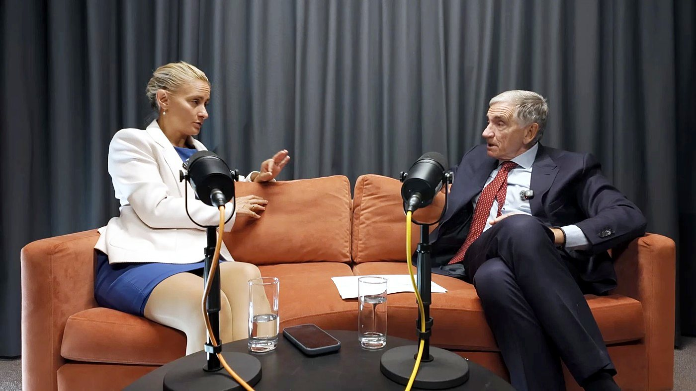

About The Dokkcast
The Dokkcast is an evidence-led health podcast hosted by Dr Nara Daubeney. Each episode features open, accessible conversations with doctors, clinicians and healthcare specialists who translate complex medical subjects into information you can understand and use.

What is The Dokkcast about?
The Dokkcast explores the health questions that matter in everyday life. Dr Nara Daubeney speaks with experienced medical professionals, researchers and specialists about their work, the evidence behind current health guidance and what patients need to know.
Conversations are informative and accessible, without oversimplifying complex subjects or presenting passing trends as established medical fact.
Who is it for?
Anyone who wants to understand their health more clearly. It is particularly useful for listeners who are tired of conflicting online claims and want thoughtful conversations led by qualified health professionals.
It is also relevant to clinicians, healthcare organisations and people interested in how medicine, research and patient experiences connect.
What does the podcast cover?
Episodes explore a growing range of medical, health and wellbeing subjects, including:
- Women’s health and hormonal change
- Metabolic health
- Musculoskeletal health
- Voice and vocal health
- Paediatric and specialist medicine
- Mental wellbeing
- Exercise, movement and recovery
- Prevention and healthier ageing
- Developments in medical research
- The experiences of healthcare professionals and patients
Why trust The Dokkcast?
The Dokkcast puts clinical expertise and evidence before trends, personalities or hype. Guests are selected for their professional experience, specialist knowledge and ability to communicate clearly.
Where medical subjects are complex or uncertain, the podcast makes room for that uncertainty. The aim is to help listeners become better informed, not to offer quick fixes or universal answers.
Medical disclaimer
The Dokkcast is provided for general information and education only. It does not replace individual medical advice, diagnosis or treatment. Always consult an appropriately qualified healthcare professional about concerns relating to your health.
Frequently asked questions
Is The Dokkcast a medical podcast?
Yes. The Dokkcast is a health and medicine podcast featuring conversations with doctors, clinicians, researchers and other qualified specialists. It translates professional knowledge into accessible discussions for a general audience.
Does The Dokkcast provide medical advice?
The Dokkcast provides general educational information, not personal medical advice. Listeners should speak to an appropriately qualified healthcare professional about individual symptoms, diagnoses or treatment decisions.
Who presents The Dokkcast?
The podcast is hosted by Dr Nara Daubeney, who leads accessible, evidence-led conversations with medical and healthcare specialists.
Are Dokkcast guests qualified health professionals?
Many Dokkcast guests are doctors, clinicians, researchers or healthcare specialists.
Where can I listen to The Dokkcast?
On the episodes page, or in your podcast app. The show is available on Spotify and Apple Podcasts, and episodes can be watched on YouTube.
Can organisations sponsor The Dokkcast?
Yes. Udokk offers selected sponsorship and brand-partnership opportunities for organisations relevant to health, medicine and wellbeing. Partnerships are considered carefully to maintain editorial trust. Find out more.